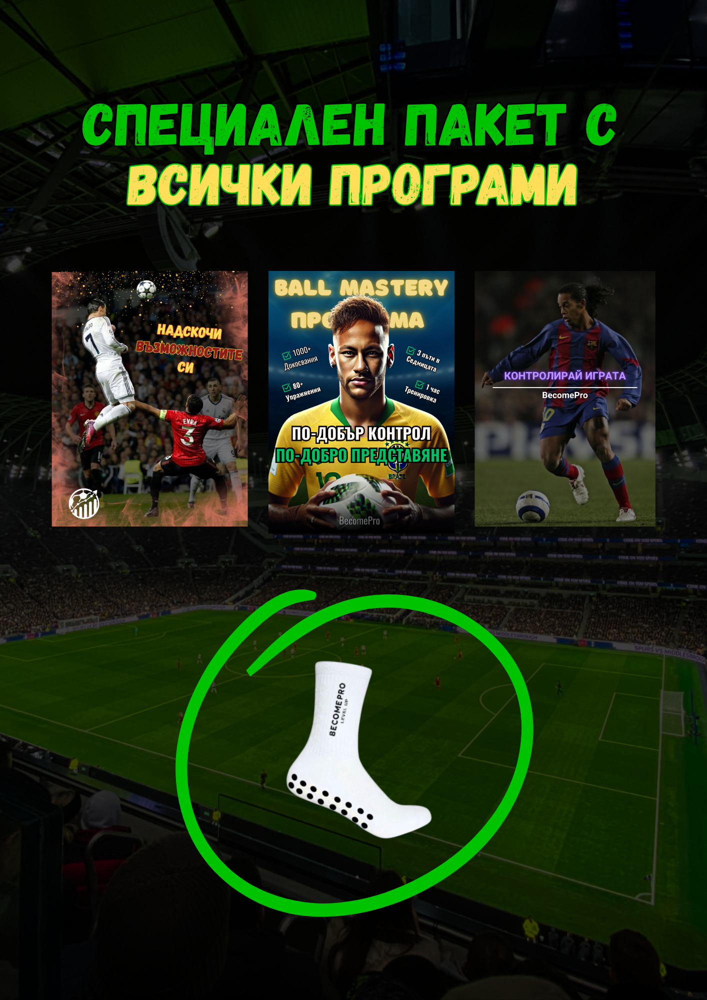
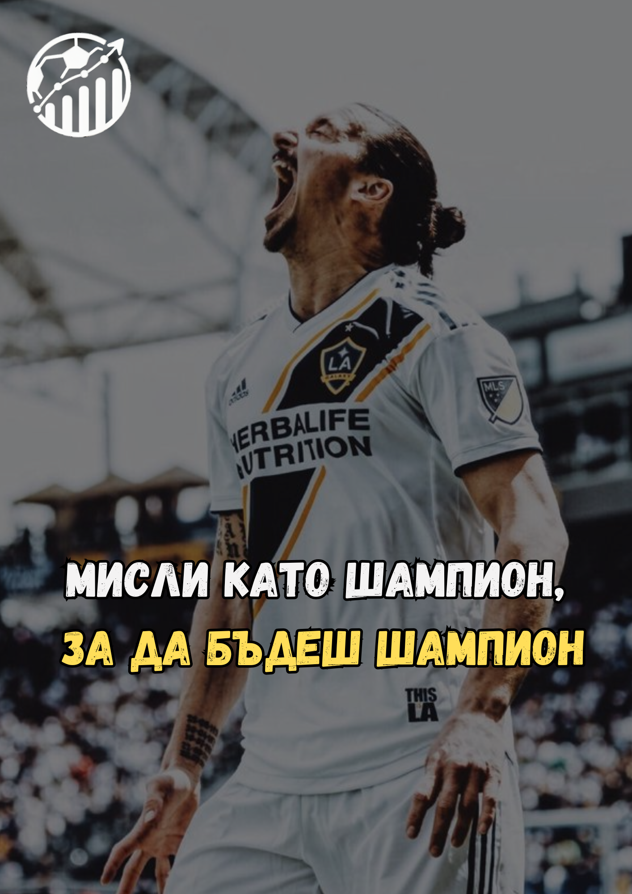
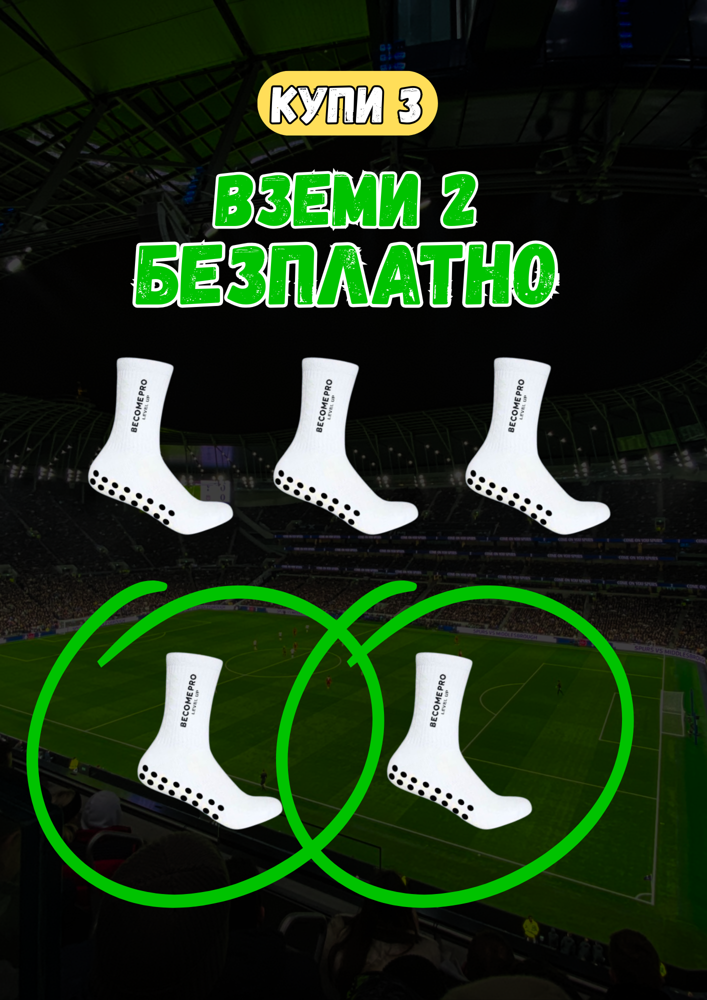

Онлайн програма
Силова програма — Ниво 2
Следващо ниво за футболисти, които вече имат основа и искат повече сила, експлозивност и устойчивост.
Цена€49.99
Достъп до материалите след покупка.

Въведение
Когато основата вече е поставена, започва надграждането.
Ниво 2 е за играчи, които имат базова подготовка и искат тренировките да станат по-интензивни, по-структурирани и по-свързани с изискванията на футбола.
Фокусът е върху по-силно тяло, по-добра експлозивност и устойчивост в действията на терена.
Какво има вътре
Прогресивна силова работа за футболисти.
Упражненията са подредени така, че натоварването да се надгражда и играчът да усеща реална посока.

Надграждане на основата
Път към Ниво 3Пълно описание
Какво представлява програмата?
Силова програма — Ниво 2 е следваща стъпка след базовата подготовка. Тя е насочена към играчи, които вече имат контрол върху основните движения и могат да работят с по-висока интензивност.
Програмата помага за развитие на сила, експлозивност и издръжливост чрез прогресивно натоварване и ясна структура.
Нужно е постоянство, добро изпълнение и готовност да се работи целенасочено. Фокусът е върху физика, която помага на играча да бъде по-бърз, по-стабилен и по-устойчив.
ФокусСила • Експлозивност • Издръжливост
За играчи със средно ниво, които искат да надградят физическата си подготовка.
Какво получаваш
Повече структура в силовото развитие.
Прогресия
Постепенно надграждане на натоварването.
Експлозивност
Работа върху по-бързи и мощни действия.
Устойчивост
По-добра физическа стабилност в игра.
Ясен план
Подредена система за самостоятелна работа.
Достъп
Материали, които можеш да следваш след покупка.
За кого е подходяща
За играчи със средна физическа подготовка.
Тази програма е подходяща за футболисти, които вече имат основа и искат повече сила, експлозивност, издръжливост и стабилност на терена.